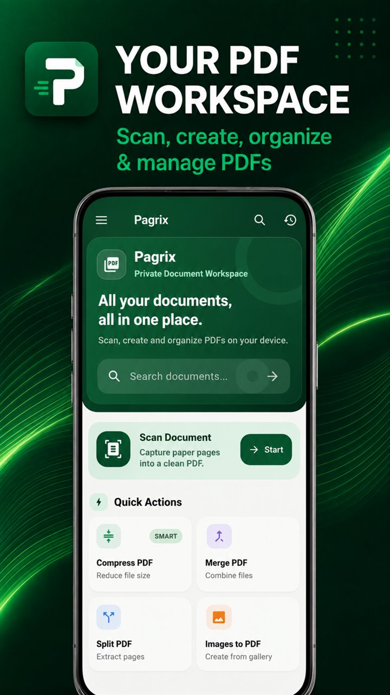
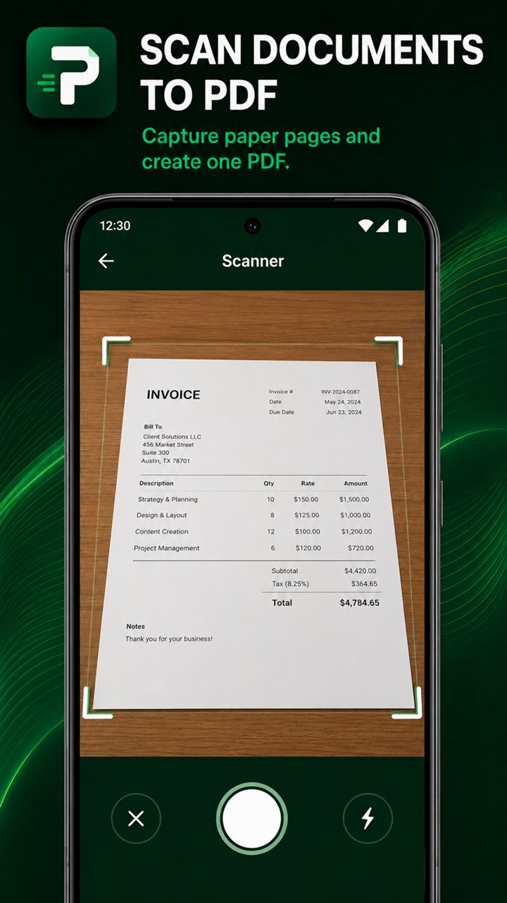

Paper to PDF
Scan paper documents into a clean, multi-page PDF.
Pagrix: PDF Scanner
An Android app by SIDAL DEV
Scan. Optimize. Organize. Share.
Scan paper documents, convert images to PDF, merge, split, compress and organize files directly from your Android phone.
Free to install · No account or subscription required · Contains advertising

Made for real tasks
Turn the files already on your phone—or the paper in front of you—into a PDF that is easier to organize and share.
Scan paper documents into a clean, multi-page PDF.
Reduce PDF size before sending a job application or résumé.
Compress scanned PDFs for email or messaging.
Convert certificate or receipt photos into one PDF.
Merge related PDF documents into a single file.
Extract selected pages from a PDF into a new document.
Read the step-by-step guideSearch, categorize and find important PDFs on Android.
One document workspace
Capture, prepare and manage everyday PDFs without moving between separate tools.

01 / Capture
Capture multiple pages, then review, rotate, remove, reorder, crop and adjust them before saving your PDF.

02 / Optimize
Optimize & Share analyzes the document and provides Light, Balanced and Strong sharing choices. The original stays available when compression may not be worthwhile.
Scan paper pages into PDF and review, rotate, remove, reorder, crop or adjust pages before saving.
Analyze a PDF, compare Light, Balanced and Strong choices, and keep the original when compression is not worthwhile.
Select images or JPG files from your phone and combine them into one PDF document.
Combine related PDFs into one file or extract selected pages into a separate document.
Use categories, search, favourites, recent files, scanner drafts and completed scans to keep documents within reach.
Control access to the Document Vault interface with a six-digit PIN or supported-device biometrics. Vault Lock does not encrypt the underlying PDF files.
Simple by design
Pagrix keeps the path clear whether you are creating a new scan or working with an existing file.
Capture a paper document or choose a PDF or image from your phone.
Prepare pages, combine files, reduce size or arrange the document your way.
Keep the finished PDF on your phone or share it through the service you choose.
Professional and everyday use
Pagrix is designed for the practical paperwork that moves through everyday life.
Clear about privacy
No account is required. Document-processing features operate on files available to Pagrix on your device, and documents are not intentionally uploaded to SIDAL DEV servers.
Files may leave Pagrix when you explicitly share or open them with another service. Pagrix contains advertising and uses Google AdMob and Google UMP as described in the complete policy.
Read the Pagrix Privacy PolicyFrequently asked
Pagrix is an Android PDF scanner and document workspace for scanning paper documents, converting images, merging, splitting, compressing and organizing PDF files on a phone.
Yes. You can capture multiple pages, review and reorder them, then save them together as one PDF.
Yes. Smart PDF Compression and Optimize & Share provide choices for reducing larger PDFs while keeping the original file available.
Yes. Images to PDF can combine multiple images or JPG files selected from your phone into one PDF.
No. Pagrix does not require an account or subscription. The app contains advertising.
No. Vault Lock controls access to the Document Vault interface using an optional six-digit PIN or supported-device biometrics. It does not encrypt the underlying PDF files.
Pagrix is available from its official listing on Google Play.
Get it on Google PlayPagrix: PDF Scanner
Put practical PDF tools within reach on your Android phone.